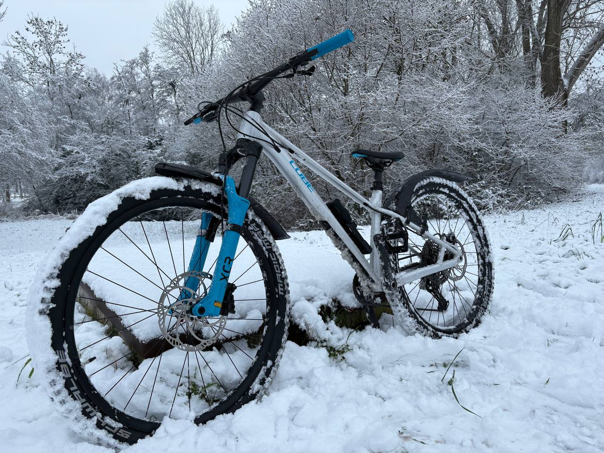

Over mij
Mijn naam is Nikita en ik ben 18 jaar oud. Ik hou van fietsen en gamen. In mijn vrije tijd speel ik graag videogames met mijn vrienden en ga ik vaak op fietstochten in de natuur.
Mijn favoriete fietsroutes
Ik hou ervan om nieuwe fietsroutes te ontdekken in Nederland. Mijn favoriete routes zijn langs de kust en door de bossen. Ik geniet van de frisse lucht en de mooie natuur tijdens het fietsen.
Mijn hobby's
Naast gamen en fietsen, vind ik het ook leuk om muziek te luisteren.
Mijn favoriete games
,- War Thunder
- Geometry Dash
- Counter-Strike
Interactive landskape
Dit is de eerse opdracht met een klein interactief ondereeel.

Animated Landskape
Dit is meer compleet animatie waarin het tijdstip van de dag verandert, wolken bewegen en bomen groeien.

Sunrise Animation
Dit is nog meer realistische zonsopganganimatie.

Orginised Sunrise Animation
Dit is gewoom hetzelfde maar de code is georganiseerd met functies.

Caterpillar Race
Dit is een interactief minispel waarin 3 rupsen het tegen elkaar opnemen.

Deta Structure Garden
Dit is een animatie van verdwijnende bloemen, hier gebruik ik arrays en for lussen.

-
-